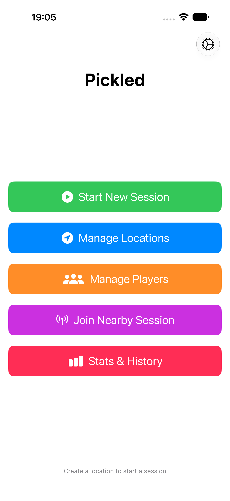
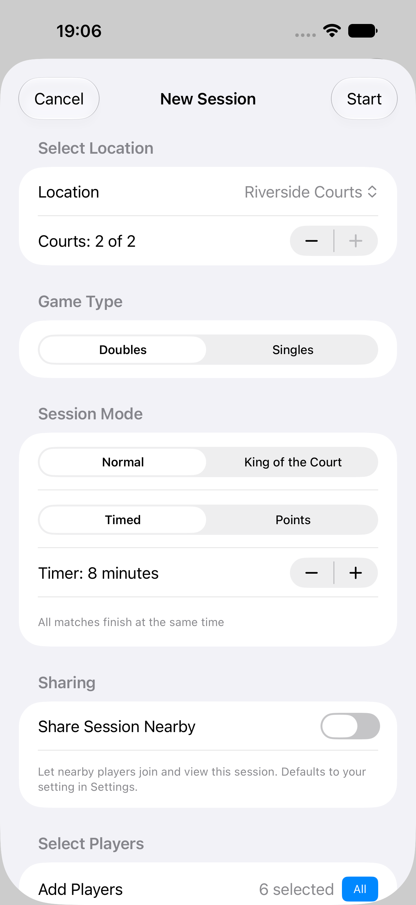
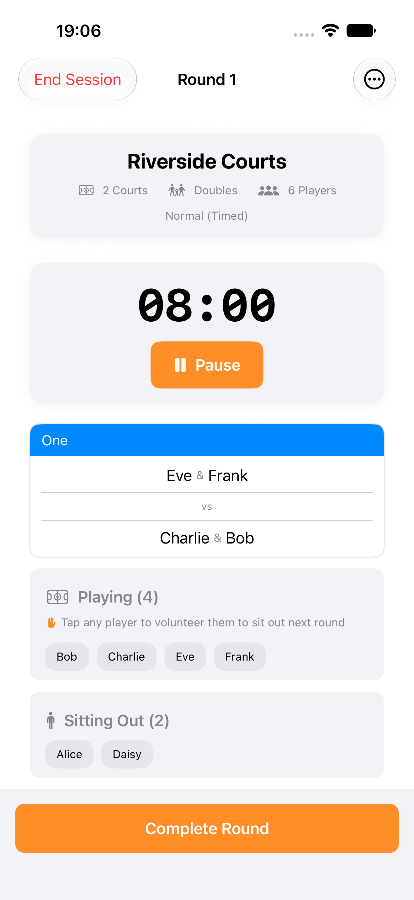
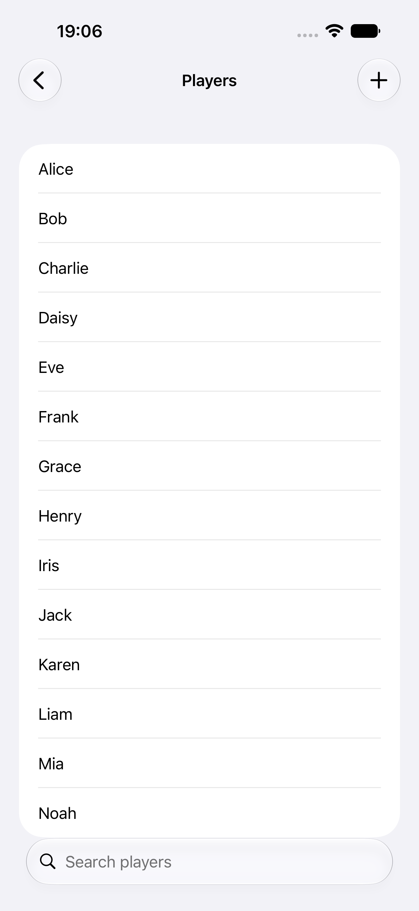
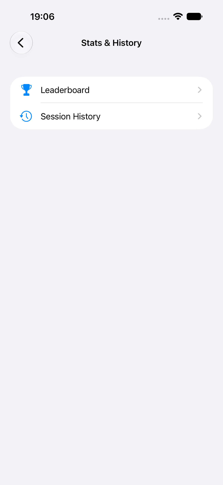

The easiest way to run a casual pickleball session. Track your players, courts, and locations — and get fair match-ups generated for you, round after round.
See features SupportPickled keeps a session moving so you can spend less time organizing and more time playing.
Maintain a saved list of players and track how often each has played and sat out.
Save the places you play, each with its own set of named, ordered courts.
Constraint-solving generates balanced pairings and minimizes repeats, in singles or doubles.
Competitive mode where winners move up a court and losers move down between rounds.
Built-in timer with an alarm and a Live Activity, for timed or points-based sessions.
Review who played, who sat out, and how each match turned out.
Organize bracket-style tournament play for your group.
Players and locations sync across your devices via iCloud.
A quick tour of Pickled on iPhone.




